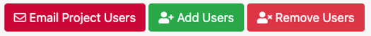

Add a Class#
Note
Only benefits eligible faculty or staff can create a class.
These instructions will help you get access to HPC resources for your class. If you are the instructor of record in my.smu, much of this process will be easy and automated for you. If you are not an instructor of record for a course but would like to set up a course (e.g. workshop or bootcamp), please reach out to help@smu.edu and include [HPC] in the subject line.
Setting up your class#
Login to ColdFront via SSO with your SMU credentials
Select Add a class
Select your course from the drop down menu
Select which sections you would like to have access to HPC resources
Mark which additional options you need
Select Save once complete.
{kind=link}
Once a class is created you will have options to Add additional users and request additional allocations.
To add Students and Other Users#
For classes, the management of students is synched hourly with class enrollment records starting a week before the semester starts. Once in the , students that add or drop will be added or removed from your class and allocations accordingly.
Note
All students will appear 7 days before the semester begins.
If you wish to add a user who is not enrolled to your class (e.g. a co-instructor), follow the steps below.
Note
This is not especially common. Do not add students that will be enrolled in the course as this could disrupt their file permissions.
Once your class is created, select Add Users within the Users section of your class
If you are searching by “Exact Username Only” search for the user via SMU email alias
Note
If you are adding multiple users, you can list them all in the Search String box
If you are searching by “All Fields” you can enter last name or SMU email alias
Once you’ve found and selected the user(s), select the role the user should have

Then Add Selected Users to Project
Once complete you will see all users requested under the Users section
{kind=link}
To Request Additional Resource Allocations#
All classes are granted a default compute allocation consisting of Core Usage (Hours) and Memory Usage (Hours). Depending on the options chosen at the creation of the project, this may contain Accelerator Usage (Hours) or a second allocation for Storage. The Storage allocation is Read-Only for students by default.
If you find your class needing additional resources, you can request additional allocations for either Compute or Storage, by following the instructions below.
{kind=link}
Next to Allocations, Select the +Request Resource Allocation button
Complete all required fields
Select the users you’d like to add to this allocation
Select Submit
Once complete you will see your status request as Pending Review under Allocations